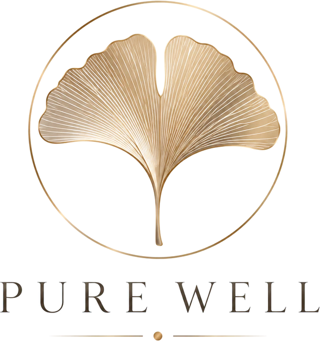
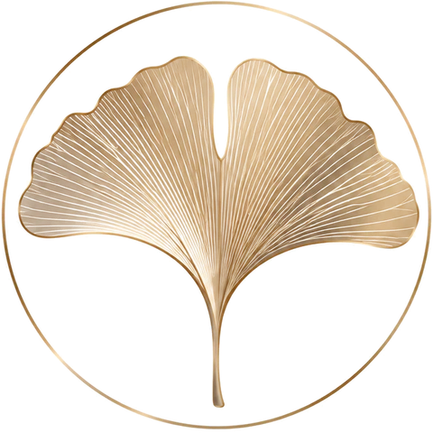
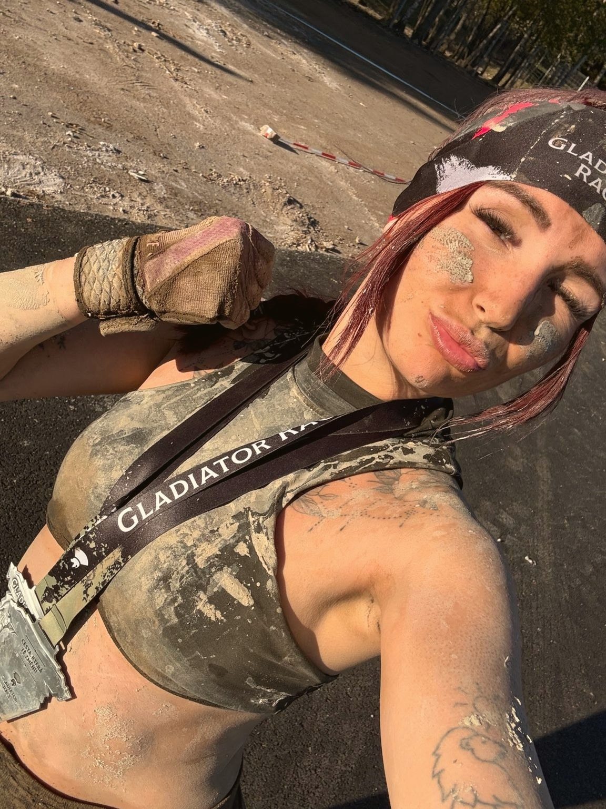

Sedavé zaměstnáníChronický stresSportovní přetíženíRychlejší regenerace

„Tělo a mysl jsou propojené nádoby. Proto pečuji o obě.“
Bolí tě záda, tělo nestíhá regenerovat a hlava nevypíná? Propojuji hloubkovou práci s tělem, regulaci nervového systému a vědomou práci s myslí. Za 8 let praxe vím, že každý potřebuje komplexní a naprosto individuální péči, ne šablonu.
Kdo jsem?
Jmenuji se Ivana Soukupová
Masérka, akreditovaná trenérka a peer konzultantka v oblasti duševního zdraví
S masážemi jsem začala v 18 letech. Za osm let individuální praxe mi pod rukama prošli sportovci, bojovníci i lidé s náročným životem.
Na vlastní kůži jsem zažila, co dokáže práce s tělem a nervovým systémem. Pomohla mi zotavit se i tam, kde lékaři už nedávali naději. Tahle zkušenost dnes prostupuje vším, co dělám.
Služby
Co právě teď hledáš?
Životní křižovatkaVztahyPráce a směřováníOpakující se vzorce
Praktický tarot s jasným vedením
DepreseBAPÚzkostiInvaliditaVyhořeníAutenticitaSebevědomí
Potřebuju si dát život dohromady
Odbornost
Kde jsem získala svou odbornost a zkušenosti?
8 let
Individuální praxe
- Masérství
- Somatika
- Lifestyle koučink
- Práce s tarotem
Vzdělání
- VŠTVS Palestra – tříleté vysokoškolské studium sportovní a pohybové specializace
- Instruktor zdravotní tělovýchovy a instruktor fitness II. třídy
- Akreditovaný kurz pro peer konzultanty v oblasti duševního zdraví
Ve své práci používám
- Deep tissue
- Terapie trigger pointů
- Mobilizace páteře
- Postizometrická relaxace
- Myofasciální release
- Dornova metoda
- Breussova masáž
- Thajská masáž
- Kineziotaping
- Práce s dechem
- Pendulace
- Koučink
Vzdělávám se neustále. Sleduji nejnovější výzkumy a dělám si vlastní rešerše, abych klientům mohla nabídnout to nejlepší, co dnes o těle a nervovém systému víme. Kompletní přehled kurzů →

Můj přístup
Autentický přístup k recovery a práci s nervovým systémem
Cestu zotavení znám zevnitř, ne jen z učebnic. Z vlastní zkušenosti čerpám hloubku, kterou se nelze naučit na žádném kurzu, a propojuji ji s celým svým odborným portfoliem. Díky tomu ke každému klientovi přistupuji jako k celku: tělo, nervový systém i život, který žije.
O brandu Pure Well
Cítit se opravdu dobře
„Péče o zdraví není výdaj. Je to ta nejlepší investice do tvé budoucnosti.“
Pure Well vznikl z přesvědčení, že cítit se dobře není luxus, ale standard. Ve vlastním těle, ve vlastní hlavě i ve vlastním životě. Ať se připravuješ na závod, zotavuješ se, nebo si jen potřebuješ odpočinout.

Symbol Pure Well
Nikdy není pozdě začít
Lidské tělo má neuvěřitelnou schopnost obnovy a adaptace. A stejně tak i mysl. Stačí touha a chuť objevit svůj plný potenciál.
Ginkgo biloba roste na Zemi přes 200 milionů let a je jedním z nejstarších stromů vůbec. V Hirošimě přežilo několik ginkg atomový výbuch v roce 1945, přestože stála jen kilometr či dva od jeho středu. Brzy poté znovu vyrašila a rostou dodnes.
Jeho list připomíná dvě mozkové hemisféry a jméno biloba znamená „dvoulaločný“: dvě poloviny, které vyrůstají z jednoho stonku. Proto je pro mě ginkgo symbolem duality těla a mysli a zároveň obnovy: připomínkou toho, že i po tom nejtěžším se dá znovu vyrůst.
Objednání
Jak se ke mně dostat
Většina klientů ke mně přichází na doporučení. Napiš mi, o kterou službu máš zájem, a domluvíme termín. Když si nevíš rady, co pro tebe bude nejlepší, probereme to spolu.
- Telefon603 338 839 · SMS, WhatsApp
- Instagram@ivana.panthera
- MasážeEl Guapo Fight Academy
Na Rovnosti 2854/13A, Praha 3 - Mentoringpeer i tarot živě online